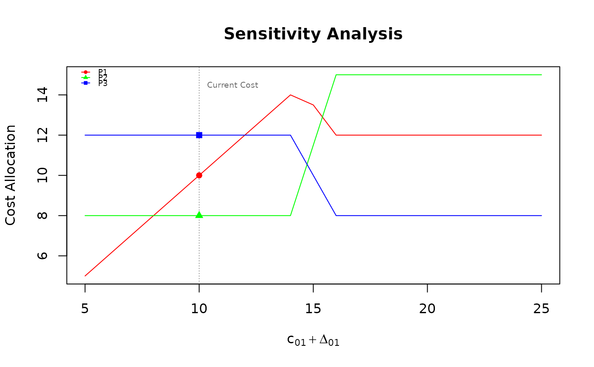
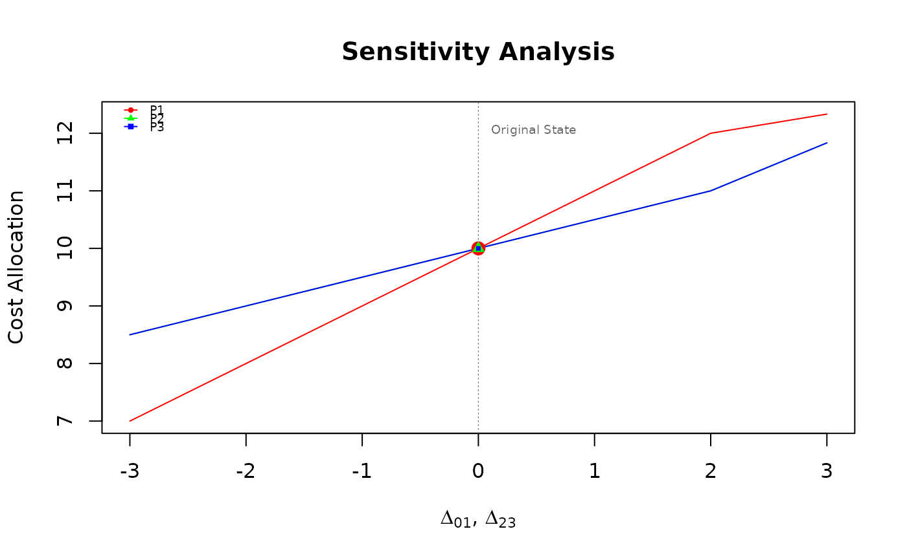

This function performs a sensitivity analysis on cost allocation rules for a minimum cost spanning tree (MCST) problem by varying the costs of specific arcs and observing the impact on the agents' cost allocation.
Arguments
- C
cost matrix between nodes. Accepts multiple formats (see "Supported formats for
C" inmcstBird).- rule
character string specifying the allocation rule to evaluate. Must be one of
"bird","duttakar","folk", or"kar".- arcs
a vector of length 2 specifying a single arc \((i, j)\), or a list of vectors specifying multiple arcs to analyze.
- delta
a numeric vector specifying the lower and upper limits of cost variation \(\small [\Delta LB, \Delta UB]\), or a list of two vectors if analyzing two independent arcs. Default is
list(c(-5, 5), c(-3, 3)).- step
numeric value specifying the step size for the sequence of variations. Default is 1.
- independent
logical; if
TRUE, evaluates the cross-sensitivity of exactly two arcs independently, generating an evaluation grid. Default isFALSE.- x
the output from
mcstSensitivity.- titles
logical; if
TRUE(default), adds informative main titles and axis labels to the plots.- ...
additional graphical parameters passed to the plot function.
Value
A list containing:
delta(ordelta1anddelta2): the variation step values applied.arc_cost: the resulting absolute cost of the arc (computed only in the single arc case).Columns named after each agent showing the dynamic cost allocations obtained under the selected
rule.
Details
The sensitivity analysis can be conducted under three different scenarios depending on
the structure of the arcs parameter and the independent flag:
Single arc variation: when a single arc is provided, its cost varies along the designated
deltainterval. The output plot displays evolution lines for each agent's cost allocation relative to the absolute cost of the arc.Joint arc variation: when multiple arcs are provided and
independent = FALSE, the samedeltavariation value is applied simultaneously to all selected arcs.Independent variation of two arcs: when exactly two arcs are provided and
independent = TRUE, a grid of cross-variations is constructed usingdelta1anddelta2. The output plot renders a selection of heatmaps (one per agent) mapping the allocations across the variation space.
See also
mcstBird, mcstDuttaKar, mcstFolk, mcstKar for the rule definitions.
mcstStabilityRange for calculating static boundaries.
mcstRules for an overview of the available rules and analysis tools in the package.
Examples
# Matrix input
C_mat <- matrix(c(0, 10, 15, 20,
10, 0, 25, 12,
15, 25, 0, 8,
20, 12, 8, 0), byrow = TRUE, ncol = 4)
# Example 1: Single arc sensitivity analysis
sens_single <- mcstSensitivity(C_mat, rule = "bird", arcs = c("0", "1"), delta = c(-5, 15))
plot(sens_single)

# 2. Joint sensitivity analysis for multiple arcs
arcs_list <- list(c("0", "1"), c("2", "3"))
sens_joint <- mcstSensitivity(C_mat, rule = "folk", arcs = arcs_list, delta = c(-3, 3))
plot(sens_joint)
